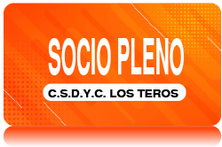
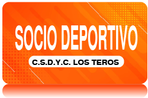
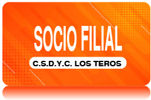

HACETE SOCIO DE LA HISTORIA MÁS GRANDE DE LOS CLUBES
El socio es la persona más importante para nuestra institución y por tal motivo nos preparamos día a día para brindarle soluciones a todas sus necesidades.
Nuestro objetivo es atender al socio y/o futuro socio en todas sus inquietudes y requerimientos y, en el caso de no poder hacerlo desde nuestra área, poder canalizar la inquietud o sugerencia a la sección correspondiente para su pronta resolución. Es fundamental conseguir que se sientan escuchados, ya que nuestros asociados son la fuente de vida de nuestra institución.

Solicitar
Acceso a las instalaciones del club y podrá realizar todas las activides deportivas. Podrá ingresar a ver los encuentros a la tribuna popular.

Solicitar
Acceso para realizar las actividades deportivas que ofrece la institución. Además podrá ingresar a ver lo encuentos a la tribuna popular.

Solicitar
Personas mayores de 18 años que residan a mas de 20 km. Ingreso a ver los encuentros a la tribuna popular y tiene 4 ingresos mensuales a las instalaciones del Club.
PREGUNTAS FRECUENTES
Si tuvo más de cinco años de antigüedad como Socio Activo, (mayor de 18 años) y renunció en un plazo menor a 5 años mediante nota con cuota al día, se puede volver a asociar abonando el 50% de la cuota de ingreso. Para consultas, concurrir a la Administración de sede central, Av. Acequia del Aire de lunes a viernes de 12.30 a 19.30 horas.Requisitos: Traer Fotocopia de DNI frente y reverso.
Son considerados Socios Honorarios las personas que designa la Asamblea de asociados, en virtud de hechos notorios que los hicieran acreedores del agradecimiento de la Institución. Gozaran de las mismas prerrogativas, derechos y atribuciones acordadas a los socios activos y no deben abonar la cuota.Asimismo, son Socios Honorarios de la Institución el Presidente de la Nación, el Gobernador de la Provincia de Santa Fe, los Ministros del Poder Ejecutivo Nacional y Provincial y el Intendente Municipal.
Para darse de baja como socio del Club debe poseer la cuota al día y presentar el Formulario de Renuncia ante la administración. Si el formulario no está presentando, no se toma como válida la renuncia.